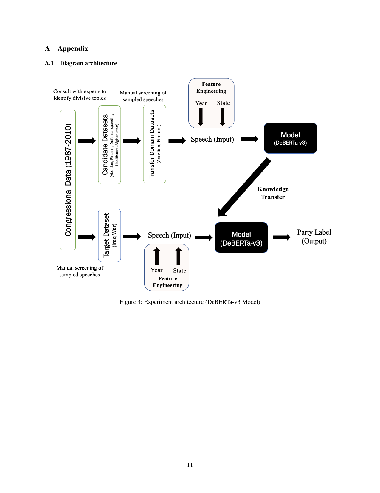
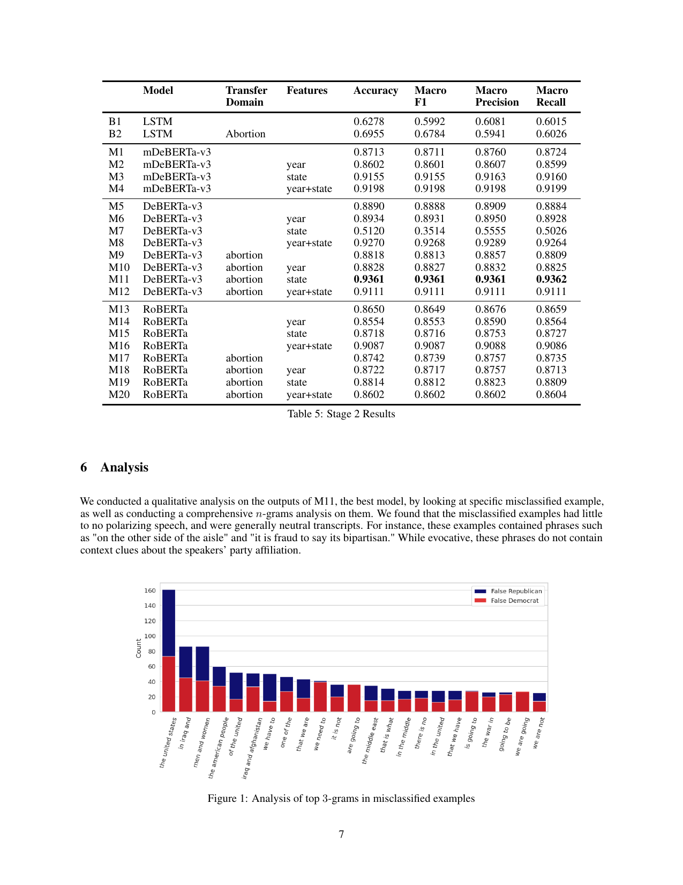
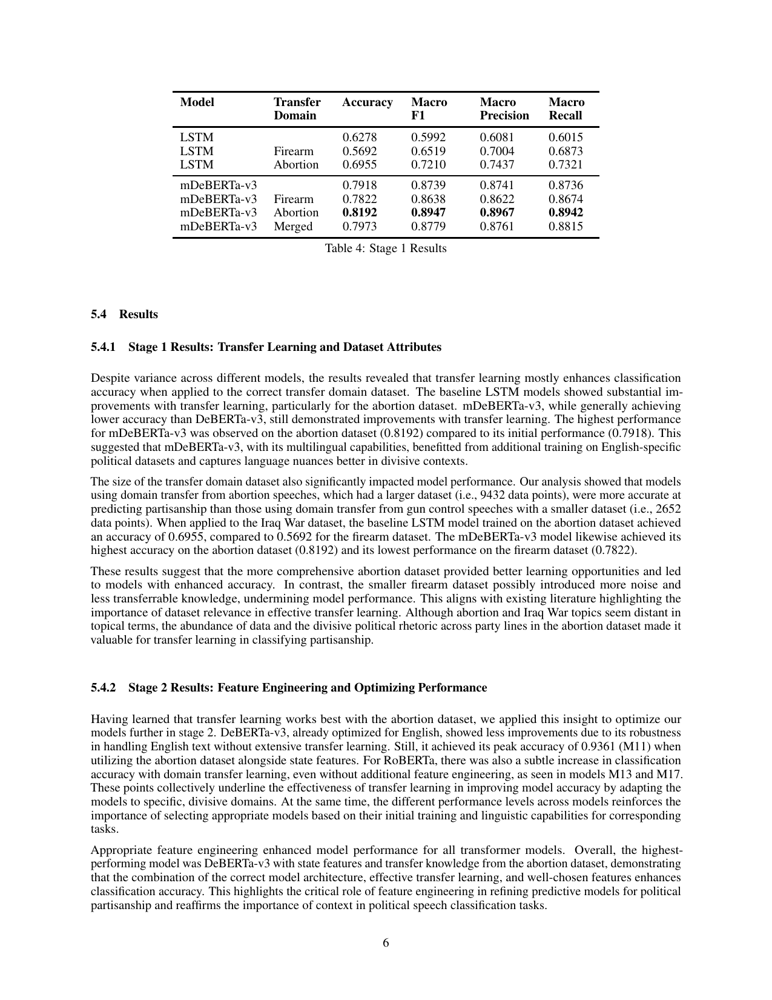

Model accuracy at a glance
Stage 1 transfer learning: abortion transfer outperforms firearms; transformers outperform LSTM.
Project overview
This project examines methods for improving partisanship prediction in congressional speeches by experimenting with transfer learning, feature engineering, and multiple transformer-based models. We introduce novel datasets on abortion, firearms, and the Iraq War to understand the impact of domain-specific knowledge and dataset characteristics on model performance. Our results show that larger, more divisive datasets (e.g., abortion) noticeably enhance accuracy compared to smaller datasets (e.g., firearms), and that incorporating temporal and geographic features further improves the model.
Goal: Showcase (1) AI-assisted data wrangling, (2) model training, and (3) insights from the model — especially features indicative of the label (party affiliation).
Data wrangling and AI-assisted analysis
We used the Stanford Congressional Record dataset (100th–111th Congresses, 1987–2010). For data processing we joined each speech with speaker information (party, date, state, chamber).
Preliminary experiments with GPT-3.5 Turbo
Preliminary analysis with GPT-3.5 Turbo on the raw international-relations dataset showed that the model performed well on ally/adversary classification but struggled on partisanship, motivating refined datasets and transfer learning.
| Task | Accuracy | F1 Score | Precision | Recall |
|---|---|---|---|---|
| Ally/Adversary | 0.8250 | 0.8158 | 0.8611 | 0.7750 |
| Partisanship | 0.5950 | 0.6161 | 0.5855 | 0.65 |
Novel datasets
We built transfer-domain datasets (abortion, firearms) and a target-domain dataset (Iraq War from 2003). Topics were chosen with input from political science experts; we used keyword filtering and manual screening. Train/validation/test split: 70/10/20.
| Split | Domain | Democrat | Republican | Total |
|---|---|---|---|---|
| Train | Firearms | 1204 | 917 | 2121 |
| Train | Abortion | 3328 | 4237 | 7565 |
| Train | Iraq | 3715 | 3670 | 7385 |
| Val | Firearms | 274 | 257 | 531 |
| Val | Abortion | 833 | 1034 | 1867 |
| Val | Iraq | 531 | 408 | 939 |
| Test | Iraq | 1061 | 1021 | 2082 |
| Total | — | 10946 | 11544 | 22490 |
Model training
Transfer learning: Models were fine-tuned on a transfer domain (abortion and/or firearms) then on the Iraq dataset; all evaluation is on the Iraq test set.
Models: Baseline bidirectional LSTM; transformer-based mDeBERTa-v3, DeBERTa-v3, and RoBERTa (with LoRA for efficiency where applicable).
Feature engineering: We added temporal (year) and geographic (state) features by prepending “year {year}” and/or “state {state}” to the speech text — these are important features indicative of the label.

Results
Stage 1: Transfer learning
| Model | Transfer domain | Accuracy | Macro F1 | Macro Precision | Macro Recall |
|---|---|---|---|---|---|
| LSTM | — | 0.6278 | 0.5992 | 0.6081 | 0.6015 |
| LSTM | Firearm | 0.5692 | 0.6519 | 0.7004 | 0.6873 |
| LSTM | Abortion | 0.6955 | 0.7210 | 0.7437 | 0.7321 |
| mDeBERTa-v3 | — | 0.7918 | 0.8739 | 0.8741 | 0.8736 |
| mDeBERTa-v3 | Firearm | 0.7822 | 0.8638 | 0.8622 | 0.8674 |
| mDeBERTa-v3 | Abortion | 0.8192 | 0.8947 | 0.8967 | 0.8942 |
| mDeBERTa-v3 | Merged | 0.7973 | 0.8779 | 0.8761 | 0.8815 |
Stage 2: Feature engineering and best model
The best-performing model was M11: DeBERTa-v3 + abortion transfer + state features (accuracy 0.9361).
| Model | Transfer domain | Features | Accuracy | Macro F1 |
|---|---|---|---|---|
| B1 LSTM | — | — | 0.6278 | 0.5992 |
| B2 LSTM | Abortion | — | 0.6955 | 0.6784 |
| M5 DeBERTa-v3 | — | — | 0.8890 | 0.8888 |
| M8 DeBERTa-v3 | — | year+state | 0.9270 | 0.9268 |
| M9 DeBERTa-v3 | Abortion | — | 0.8818 | 0.8813 |
| M11 DeBERTa-v3 | Abortion | state | 0.9361 | 0.9361 |
| M13 RoBERTa | — | — | 0.8650 | 0.8649 |
| M17 RoBERTa | Abortion | — | 0.8742 | 0.8739 |

Insights and important features
- Best model (M11): DeBERTa-v3 with state features and transfer learning from the abortion dataset. State is a strong feature indicative of the label.
- Transfer domain: The larger, more divisive abortion dataset outperformed the smaller firearms dataset — dataset size and divisiveness matter for transfer learning.
- Feature importance: Adding temporal (year) and geographic (state) context improved accuracy; for M11, state alone gave the best result.
- N-grams analysis: Misclassified examples often had neutral or context-specific language (e.g. “on the other side of the aisle,” “enemy action in al Anbar”), highlighting which linguistic/contextual features are indicative of the label.

Code and materials
Code and notebooks are in the repository:
- Code — Models (LSTM, BERT, DeBERTa, Llama, GPT) and iterative analysis
- Evaluation — Evaluation and dataset processing notebooks